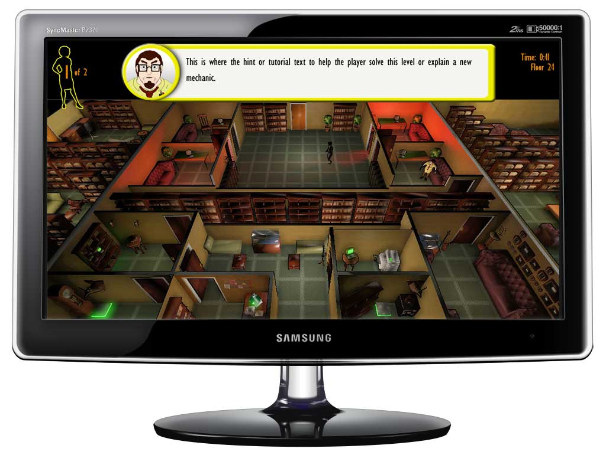
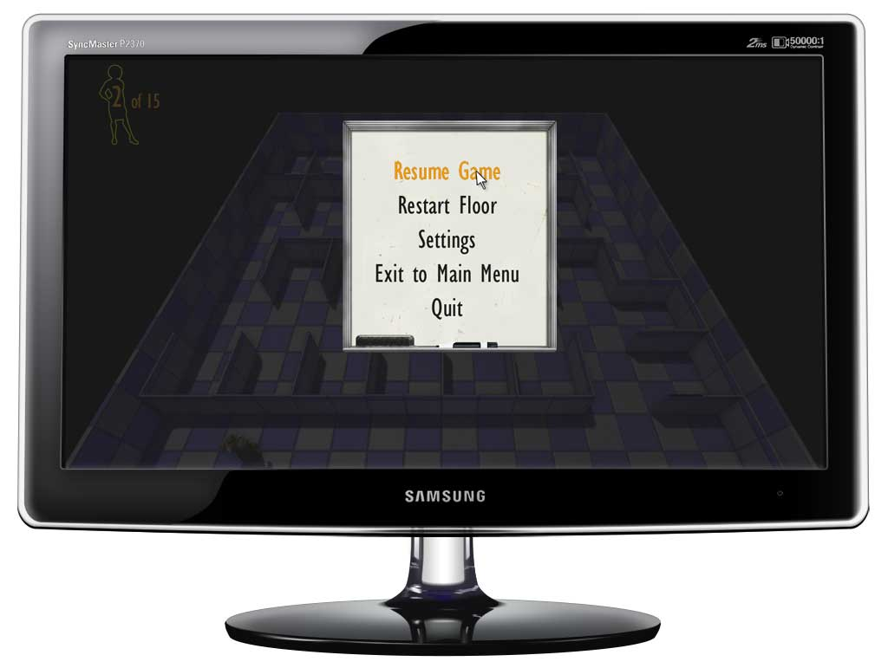

{40 Stories: Game UI, Interaction;}
California State University, Chico has a large-scale student run game studio. I was the 2D art lead and UI designer for the game 40 Stories.
I designed the GUI, in-game menu, starting menu and subsequent screens. The starting menu was a full 3D level, with the level select in the elevator as you move up the building through 40 stories.
I also directed a team of 8-10 concept artists to create concepts and 2D game assets for the development departments.